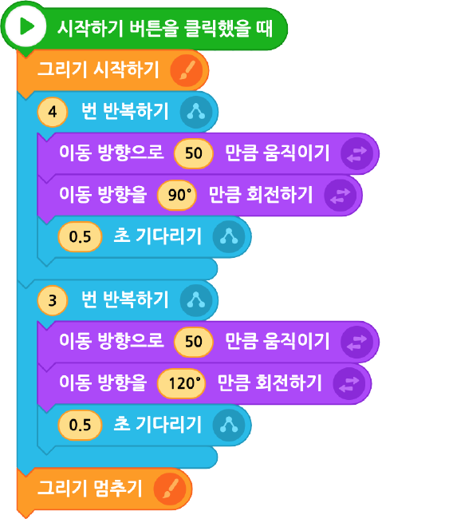

함수 만들기 | 편지 봉투 모양이 여러 개 반복되는 프로그램을 만들고자 할 때, 반복되는 부분을 함수로 만들어 사용하면 편리하다. 편지봉투 모양을 함수로 만들어 여러 번 사용해 보자.
다음 실행 화면을 참고하여 편지봉투 모양을 만드는 프로그램을 작성하고, 이를 함수로 만들어 보자.
실행 화면
- 오브젝트
-
연필(1)
편지봉투 모양 만들기
아래 블록을 참고하여 프로그램을 작성해 보자.
연필(1)

‘편지봉투‘ 함수 만드는 과정
(1)[함수] - [함수 만들기]를 클릭한다.
(2)함수 정의하기 대화 상자에 함수 이름을 ‘편지봉투’로 입력하고 저장한다.
(3)앞에서 작성한 프로그램에서 함수로 사용할 범위를 복사한다.
(4)'편지봉투‘ 함수를 더블 클릭하여 함수 정의하기에 복사한 코드를 붙여 넣고 저장한다.
함수 사용하기 | 이미 만들어 놓은 함수는 재사용이 가능하다. 만들어 놓은 함수를 사용하여 화면에 노란색 편지봉투를 5개 그리는 프로그램을 작성해 보자.
다음 실행 화면을 참고하여 노란색 편지봉투를 5개 그리는 프로그램을 완성해 보자.
실행 화면
- 오브젝트
-
연필(1)
칠판(2)
- 함수
-
편지봉투
노란색 편지봉투를 5개 그리기
아래 블록을 참고하여 프로그램을 작성해 보자.
연필(1)
이전
다음